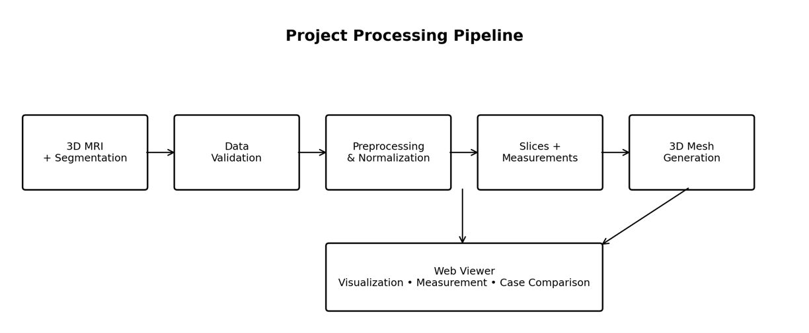
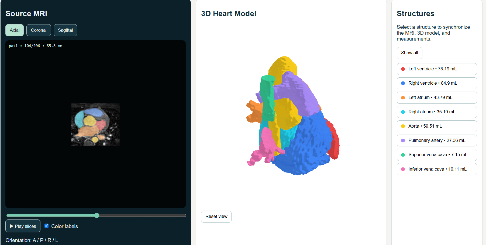
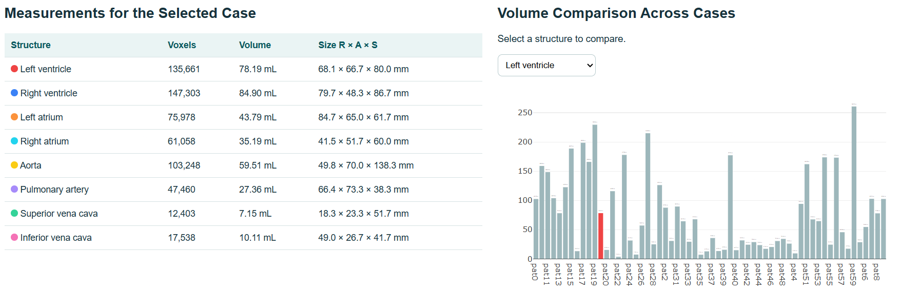

Three viewing planes
Switch between axial, coronal and sagittal slices and move through the volume with a slider.
PROJECT OVERVIEW
Web-based Interactive 3D Reconstruction and Volumetric Visualization of Cardiac MRI
Explore 3D cardiac MRI volumes together with their segmentation labels: MRI slices, colored overlays, 3D surface models and structure measurements, all in one browser interface.
See the viewer Run it locallyHeart3D prepares MRI slices, labeled overlays, 3D surface models and structure measurements so they can be inspected in a local browser. The MRI volume supplies the image intensities; its paired segmentation volume assigns an anatomical label to every voxel.
Scope. Heart3D requires segmentation labels supplied by a dataset or a separate workflow. It does not perform automatic segmentation, detect disease, or provide a diagnosis.
Switch between axial, coronal and sagittal slices and move through the volume with a slider.
Show the supplied segmentation as colored labels on top of the grayscale MRI.
Rotate and zoom surfaces reconstructed from the labels with the Marching Cubes algorithm.
Read voxel count, volume in mL and size in mm for every labeled structure.
Compare the volume of the same structure across compatible cases in one chart.
A small Python server serves the prepared files to the browser at 127.0.0.1:8765.



| Label | Structure | Example volume (pat1) |
|---|---|---|
| 1 | Left ventricle | 78.19 mL |
| 2 | Right ventricle | 84.90 mL |
| 3 | Left atrium | 43.79 mL |
| 4 | Right atrium | 35.19 mL |
| 5 | Aorta | 59.51 mL |
| 6 | Pulmonary artery | 27.36 mL |
| 7 | Superior vena cava | 7.15 mL |
| 8 | Inferior vena cava | 10.11 mL |
Values are dataset examples, not clinical reference ranges.
Open PowerShell in the code_web folder and run:
python -m pip install -r requirements.txt python prepare_all_case.py ".\cropped_norm\cropped_norm" python server.py
Then open http://127.0.0.1:8765 in a browser.
Press Ctrl+C to stop the server.